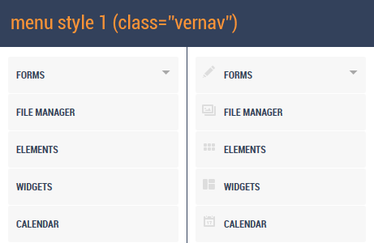

"Amanda Responsive Admin Template" Documentation v1.0
Created: 07/17/2012 By: Mienard Lumaad (themepixels)
Thank you for downloading my theme. If you have any questions that are beyond the scope of this help file, please feel free to email via our contact page. Thanks so much!
In this template, the <body> tag uses 4 class names for login page (class="loginpage"), for pages with left menu (class="withvernav"), for pages with left menu style 1 in collapsed mode (class="withmenucoll") and for pages with left menu style 2 in collapsed mode (class="withmenucoll2"). These 4 class names will be used to determine which background style and position to use in the body element. For example, in the login page it use <body class="loginpage"> and for other pages it use <body class="withvernav"> or no class when you want to have a page without left menu
This theme is a flexible layout with up to 2 columns with multiple columns in the main panel.
All of the information within the page area is nested within a div with a class of "bodywrapper".
<body>
<div class="bodywrapper">
<div class="topheader"> ... </div>
<div class="header"> ... </div>
...
</div><!--bodywrapper-->
</body>
All of the information within the header area of the page is wrapped with a class of "topheader" and "header".
<div class="topheader">
<div class="left">
<!-- LOGO GOES HERE -->
...
</div>
<div class="right"> ... </div>
</div>
<div class="header">
<div class="headermenu">
<ul>
<li><a href=""><span class="icon icon-flatscreen"></span>Dashboard</a></li>
...
</div>
<div class="headerwidget">
...
</div>
</div>
The structure for left menu are the following. If you want to use the default style for left menu just use the class vernav, otherwise vernav2.

<!-- NOTE: The <body> MUST have a class name of "withvernav" -->
<div class="vernav iconmenu">
<ul>
<li><a href="#formsub" class="editor">Forms</a> <!-- with submenu -->
<span class="arrow"></span>
<ul id="formsub">
<li><a href="forms.html">Basic Form</a></li>
...
<li><a href="filemanager.html" class="gallery">File Manager</a></li>
...
</div><!-- vernav-->
<div class="centercontent">
...
</div><!--centercontent-->
As you can see in the above code, there is another class name (iconmenu) next to vernav and that is if you want to have an icon in the menu. If you prefer not to have an icon just remove that class name.
If you prefer to have your page not to have a left menu, then you should do the following:
The main content is where you can see the main content of the page that wraps inside the element with a class name of "contentwrapper" and with a page header right before to it.
<div class="pageheader">
<h1 class="pagetitle">Calendar</h1>
<span class="pagedesc">This is a sample description of a page</span>
<ul class="hornav">
<li><a href="#updates">Updates</a></li>
...
</ul>
</div><!--pageheader-->
<div id="contentwrapper" class="contentwrapper">
...
</div><!--contentwrapper-->
All of the information found in the main content of the page should put inside the element with a class name of "contentwrapper". If you want this main content to have a right panel refer to section 1.6 With Fixed Width Right Panel
From the code above, the page have a page title that wraps in a div element "pageheader". The page header also have a tab with a class name of "hornav". You can remove the tab if you want to have a no tab in the page by removing the element "hornav" along with it's sub element. Upon removing the tab element you should also add a class name of "notab" in the element "pageheader". Refer code below
<div class="pageheader notab"> <h1 class="pagetitle">Calendar</h1> <span class="pagedesc">This is a sample description of a page</span>
</div><!--pageheader-->
<div class="one_half"> content here... </div> <div class="one_half last> content here ... </div>
<div class="one_third"> content here ... </div> <div class="one_third"> content here ... </div> <div class="one_third last"> content here ... </div>
This theme also allows up to 6 columns by using a class of two_third, one_fourth, three_fourth, one_fifth, four_fifth, one_sixth and five_sixth. You can also create 2 columns using a combination of two_third and one_third. Make sure to add a class name of "last" to prevent your page messed up
This theme also have a fixed width right column instead of using the columns (one_half, one_third, etc.). See page calendar.html
<div id="contentwrapper" class="contentwrapper withrightpanel"> ... </div><!--contentwrapper-->
<div class="rightpanel"> <div class="rightpanelinner"> ... </div> </div><!--rightpanel-->
To create a page with right panel, add a div element with a class name of rightpanel (refer code above) right next to div element contentwrapper. As you can see in the contentwrapper element it also has a class name of "withrightpanel" so when adding a right panel to a page, you should also add "withrightpanel" class to element contentwrapper. The purpose of this class is to adjust the right margin of the element contentwrapper to give space for the right panel.
You can use a tab and update the content of the page by using ajax or inline, simply by following the format below.
<ul class="hornav"> <li class="current"><a href="update.html">Updates</a></li> <!-- update content from url --> <li><a href="#activities">Activities</a></li> <!-- update content from inline element -->
</ul>
By clicking the tab, the content will update depends on the attribute of href. If the href value is a url(i.e update.html) , the content should update from the url and if the href value is a text that start with #, it will look for hidden element with an id based on the href value. Note: You cannot join the tab with an href value of url and href value of id. If you want to update the content from url, then all of the tab href value should also be a url and if one have a href value of id, the rest should also have a href value of id. Refer to code below
<div id="contentwrapper" class="contentwrapper"> <div id="content1" class="subcontent"> ... </div> <div id="content2" class="subcontent" style="display:none"> ... </div> </div><!--contentwrapper-->
The code above should be in that format if the tabs href value is an id (href="#update"). The href value must exist in order to work. For example, the href value is #update. The element with an id of update should exist (<div id="update" class="subcontent">) and must have a class name of subcontent. Take note that subcontent is shown by default, so if you have multiple tabs, the rest of the element should add an attribute of style="display: none". Refer to code above.
This template contains some general styling, such as anchor tag colors, font-sizes, etc. Keep in mind, that these values might be overridden somewhere else in the file. Below is what css styles are arranged in style.default.css. CSS files are located in folder /css. Third partyl css styles can be found in css/plugins/ like the styles for jquery ui and fullcalendar.
1. Reset Style 2. General Styles 3. Column Styles 4. Login Page Styles 5. Notification Styles 6. User Information Drop Styles 7. Header Styles 8. Page Header Styles 9. Horizontal Navigation Styles 10. Vertical Navigation Styles 11. Center Content Styles 12. Main Content Styles 13. Dashboard Styles 14. File Manager Styles 15. Right Panel Styles 16. Widget Box Styles 17. Content Slider Styles 18. Calendar Styles 19. Standard Tables Styles 20. Standard Form Styles 21. Wizard Styles 22. Blog Styles 23. Progress Bar Styles 24. Pagination Styles 25. Slim Scrollbar Styles 26. Breadcrumbs Styles 27. Color Picker Styles 28. Notification Messages 29. Customer Support Styles 30. Buttons & Icons Styles 31. Typography Styles 32. News Feed Styles 33. Profile Page Styles 34. Photo Sharing Styles 35. Product List Styles 36. Messages Styles 37. Error Pages Styles 38. Custom Styles 39. Media Queries
The theme imports 3rd party css styles by the following:
@import url('../fonts/roboto.css');
@import url('plugins/jquery.alerts.css');
@import url('plugins/uniform.tp.css');
@import url('plugins/jquery.ui.css');
@import url('plugins/jquery.ui.autocomplete.css');
@import url('plugins/fullcalendar.css');
@import url('plugins/colorbox.css');
@import url('plugins/colorpicker.css');
@import url('plugins/jquery.jgrowl.css');
@import url('plugins/jquery.tagsinput.css');
@import url('plugins/ui.spinner.css');
Style switching works by adding additional line of codes right next to the main stylesheet.
<link rel="stylesheet" href="css/style.default.css" type="text/css" />
<link id="addonstyle" rel="stylesheet" href="css/style.blueline.css" type="text/css" />
The second stylesheet in line 2 of the code above should always have an id of "addonstyle" to make theme switching works. The second stylesheet will automatically add using javascript when user click on the style switcher. You can also add manually by reading the topic next to this.
This template is using cookie to preserve the style that is already set by user to load the that style to other pages of this template. See code below.
///// CHANGE THEME /////
jQuery('.changetheme a').click(function(){
var c = jQuery(this).attr('class');
if(jQuery('#addonstyle').length == 0) { if(c != 'default') { jQuery('head').append('<link id="addonstyle" rel="stylesheet" href="css/style.'+c+'.css" type="text/css" />'); jQuery.cookie("addonstyle", c, { path: '/' }); } } else { if(c != 'default') { jQuery('#addonstyle').attr('href','css/style.'+c+'.css'); jQuery.cookie("addonstyle", c, { path: '/' }); } else { jQuery('#addonstyle').remove(); jQuery.cookie("addonstyle", null);
}
}
});
///// LOAD ADDON STYLE WHEN IT'S ALREADY SET /////
if(jQuery.cookie('addonstyle')) {
var c = jQuery.cookie('addonstyle');
if(c != '') {
jQuery('head').append('<link id="addonstyle" rel="stylesheet" href="css/style.'+c+'.css" type="text/css" />');
jQuery.cookie("addonstyle", c, { path: '/' });
}
}
Changing the default style of this template is simple. You can manually add the line below inside of your <head> element.
<head> <link rel="stylesheet" href="css/style.default.css" type="text/css" />
<link id="addonstyle" rel="stylesheet" href="css/style.blueline.css" type="text/css" /> </head>
This theme imports a total of 26 3rd party javascript files and 17 custom javascript files for some the pages in this template.
Folder: js/custom/ - 17 scripts for doing the animation, effects, functionality, etc.
Folder: js/plugins/ - 26 scripts used for the plugins
Before using any of the plugins above in your page, make sure to add the jQuery in your head before adding any jQuery plugins.
<script type="text/javascript" src="js/plugins/jquery-1.7.min.js"></script>
This template is using TinmyMCE as wysiwyg editor. To learn more about using TinyMCE, just go to their website http://www.tinymce.com/
For this editor to work, the code below should be present in your <head> tag element
<script type="text/javascript" src="js/plugins/jquery-1.7.min.js"></script>
<script type="text/javascript" src="js/plugins/tinymce/jquery.tinymce.js"></script> <script type="text/javascript" src="js/custom/editor.js"></script>
In your page, the code below should be present
<textarea class="tinymce"></textarea>
This template uses jQuery Character Count to count the number of character inside a textarea. This plugin is executed in forms.html. By using the plugin, the code below must be present in your page.
<script type="text/javascript" src="js/plugins/charCount.js"></script>
<script type="text/javascript">
jQuery(document).ready(function(){
jQuery("#textarea").charCount({
allowed: 120,
warning: 20,
counterText: 'Characters left: '
});
});
</script>
// ADD THE CODE BELOW ANYWHERE INSIDE <BODY> ELEMENT
<textarea cols="80" rows="5" id="textarea"></textarea>
To learn more about this plugin, go to Character Count
This template uses FullCalendar v1.5.2 by Adam Shaw. You can read the full documentation for this calendar to http://arshaw.com/fullcalendar/docs/
For calendar to work in your page, simply add the following code below into your <head> tag. Note: The template is using the jQuery version 1.7 but the calendar doesnt work in this version so in your calendar.html you should use the older jQuery with version 1.5.2. The rest of the pages of this template just use 1.7
<script type="text/javascript" src="js/plugins/jquery-1.5.2.min.js"></script> <script type="text/javascript" src="js/plugins/fullcalendar.min.js"></script>
<script type="text/javascript" src="js/custom/calendar.js"></script>
Upon page load, the fullcalendar will look for an element with an id #calendar to append the calendar. To change the id name, just refer to js/custom/calendar.js to change the id
<div id="calendar"></div>
You can add your events like the code format below.
<div id='external-events'>
<div class='external-event'>My friend's birthday event</div>
<div class='external-event'>My wedding</div>
<div class='external-event'>Company party</div>
<div class='external-event'>Island hopping event</div>
<div class='external-event'>Fun run event</div>
</div>
This template is using jQuery Alerts plugin to have a custom alert box instead of using browser's alert box. jQuery alerts works by adding the following code below in your page.
Add the line of code below in your <head> tag
<script type="text/javascript" src="js/plugins/jquery.alerts.js"></script>
<script type="text/javascript">
jQuery(document).ready(function(){
jQuery('.alertboxbutton').click(function(){
jAlert('This is a custom alert box', 'Alert Dialog');
return false;
});
});
</script>
//ADD THIS ANYWHERE IN THE <BODY> ELEMENT OF YOUR PAGE//
<a href="" class="alertboxbutton">Basic Alert</a>
The first parameter is the alert message and the second parameter is the title of the alert box. To know more about using this plugin, you may go to site http://www.abeautifulsite.net/blog/2008/12/jquery-alert-dialogs/
This plugins allows texarea to grow vertically when text is typed in. Below codes must be present in your page when you want to use this plugin.
<script type="text/javascript" src="js/plugins/jquery.autogrow-textarea.js"></script>
<script type="text/javascript"> jQuery(document).ready(function(){
jQuery('#textarea').autogrow(); }); </script> //ADD THIS ANYWHERE INSIDE OF <BODY> ELEMENT OF YOUR PAGE <textarea id="textarea"></textarea>
This template have a widget uses a content slider. To use this plugin, below code must be present in your page.
<script type="text/javascript" src="js/plugins/jquery.bxSlider.min.js"></script>
<script type="text/javascript">
jQuery(document).ready(function(){
jQuery('#slidercontent').bxSlider({
prevText: '',
nextText: ''
});
});
</script>
//ADD THIS ANYWHERE IN YOUR <BODY> ELEMENT OF YOUR PAGE
<ul id="slidercontent">
<li>...</li>
<li>...</li>
</ul>
To learn more about using this plugin, go to site http://bxslider.com/
To use colorbox in any of your page by using this template, code below must be present in your page.
// ADD THIS IN YOUR <head> TAG //
<script type="text/javascript" src="js/plugins/jquery.colorbox-min.js"></script>
<script type="text/javascrpt">
jQuery(document).ready(function(){
jQuery('.filemgr_menu a.preview').colorbox();
});
</script>
// ADD THIS ANYWHERE ON YOUR <body> ELEMENT //
<a href="images/pic1.png" class="preview">View File</a>
This template uses ColorPicker by Stefan Petre. You can visit www.eyecon.ro to use more of the options and methods for this plugin.
To add colorpicker in your page, simply add the below code into your head tag
<script type="text/javascript" src="js/plugins/jquery.colorbox-min.js"></script>
<script type="text/javascript">
jQuery(document).ready(function(){
jQuery('#colorpicker').ColorPicker({
onSubmit: function(hsb, hex, rgb, el) {
jQuery(el).val(hex);
jQuery(el).ColorPickerHide();
},
onBeforeShow: function () {
jQuery(this).ColorPickerSetColor(this.value);
}
}).bind('keyup', function(){ jQuery(this).ColorPickerSetColor(this.value);});
});
</script>
After you add the above code in your head, simply add the html code below anywhere you like the colopicker to display.
<input id="colorpicker" type="text" />
Datepicker is part of the jQuery UI plugin. To add this in your page a below code is added in the head.
<script type="text/javascript" src="js/plugins/jquery-ui-1.8.16.custom.min.js"></script>
<script type="text/javascript">
jQuery(document).ready(function(){
jQuery( "#datepicker" ).datepicker();
});
</script>
//add this anywhere in your page
<input id="datepicker" type="text" class="width50" />
This template uses growl notification (jGrowl) by Stan Lemon. You can use growl in any events of your scripts to display notification. You can use growl by adding the code below.
<script type="text/javascript" src="js/plugins/jquery.jgrowl.js"></script>
<script type="text/javascript">
jQuery(document).ready(function(){
//you can insert the below code in any events like click, hover,submit, focus, etc.
jQuery.jGrowl("Hello world!");
});
</script>
Tabs is part of the jQuery UI plugin. To add this in your page a below code is added in the head.
<script type="text/javascript" src="js/plugins/jquery-ui-1.8.16.custom.min.js"></script>
<script type="text/javascript">
jQuery(document).ready(function(){
jQuery( "#tabs" ).tabs();
});
</script>
//add this anywhere in your page
<div id="tabs">
<ul>
<li><a href="#tabs-1">Sample Tab A</a></li>
<li><a href="#tabs-2">Sample Tab B</a></li>
<li><a href="#tabs-3">Sample Tab C</a></li>
</ul>
<div id="tabs-1"> ... </div>
<div id="tabs-2"> ... </div>
<div id="tabs-3"> ... </div>
</div><!-- #tabs -->
Accordion is part of the jQuery UI plugin. To add this in your page a below code is added in the head.
<script type="text/javascript" src="js/plugins/jquery-ui-1.8.16.custom.min.js"></script>
<script type="text/javascript">
jQuery(document).ready(function(){
jQuery( ".accordion" ).accordion();
});
</script>
//add this anywhere in your page
<div class="accordion">
<h3>Title here</h3>
<div> content goes here... </div>
<h3>Title here</h3>
<div> content goes here... </div>
<h3>Title here</h3>
<div> content goes here... </div>
</div><!-- accordion -->
Slider is part of the jQuery UI plugin. More options available in jQuery UI website. To add this in your page a below code is added in the head.
<script type="text/javascript" src="js/plugins/jquery-ui-1.8.16.custom.min.js"></script>
<script type="text/javascript">
jQuery(document).ready(function(){
jQuery("#slider").slider({value: 40});
});
</script>
//add this anywhere in your page
<div id="slider"></div>
This template uses Flot to create chart for your reports or anywhere on your page. To use this plugin just add the line of code below.
<script type="text/javascript" src="js/plugins/jquery.flot.min.js"></script> <script type="text/javascript" src="js/plugins/jquery.flot.pie.min.js"></script>
To know how this theme implemented the flot you can open the file charts.js at js/custom/ folder.
To know more how to use this plugin you can visit the page at http://code.google.com/p/flot/
In this template, I have added chat page for you to use when you are planning to have a chat support for your backend project. I did'nt use any jQuery plugins to work on this template, I just made it my own so feel free to see the js/custom/chat.js file to know how the functionality works.
This template uses form validation by Jörn Zaefferer. To use this plugin, simply add the line of code below
<script type="text/javascript" src="js/plugins/jquery.validate.min.js"></script>
<script type="text/javascript">
jQuery(document).ready(function(){
jQuery("#form").validate({
rules: {
name: "required",
email: {
required: true,
email: true,
},
occupation: "required"
},
messages: {
name: "Please enter your name",
email: "Please enter a valid email address",
occupation: "Please select your occupation"
}
});
});
</script>
<form id="form" action="" method="post"> ... </form>
In this template, I use jQuery plugin called smartWizard for wizard form template. This plugin is developed by TechLaboratory. You can visit http://techlaboratory.net/products.php?product=smartwizard for more information. The code below is the one on how I use it for this template.
jQuery(document).ready(function(){
// Smart Wizard
jQuery('#wizard').smartWizard({onFinish: onFinishCallback});
function onFinishCallback(){
alert('Finish Clicked');
}
// A Wizard form in modal box
jQuery(".inline").colorbox({inline:true, width: '60%', height: '500px'});
});
I've used the following images, icons or other files as listed.
Once again, thank you so much for purchasing this theme. As I said at the beginning, I'd be glad to help you if you have any questions relating to this theme. No guarantees, but I'll do my best to assist. If you have a more general question relating to the themes on ThemeForest, you might consider visiting the forums and asking your question in the "Item Discussion" section.
Mienard Lumaad (themepixels)